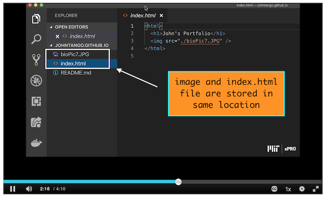
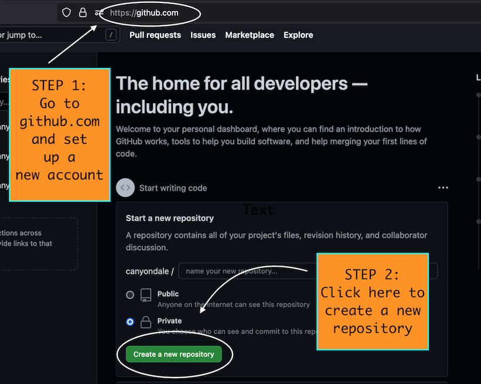
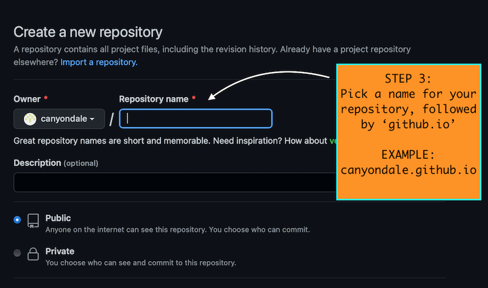
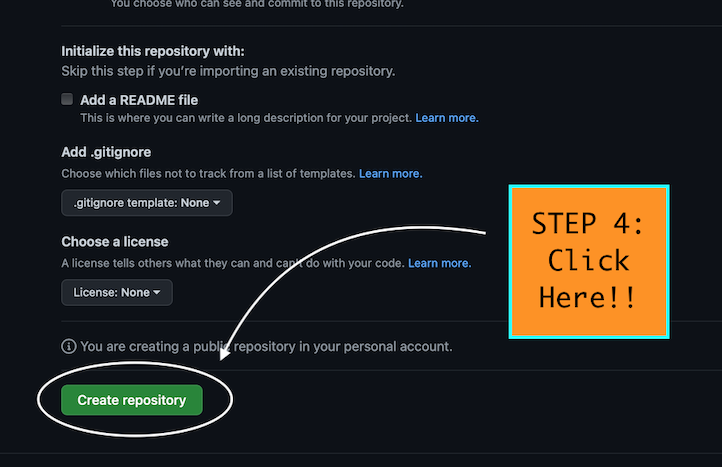
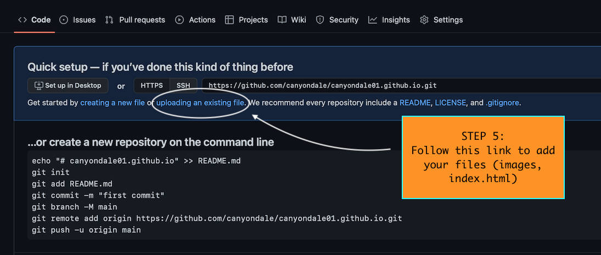
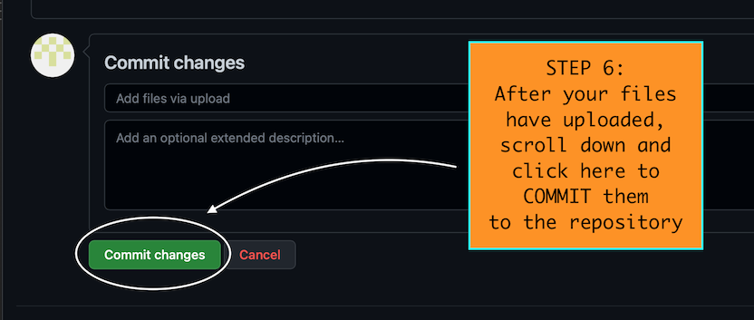
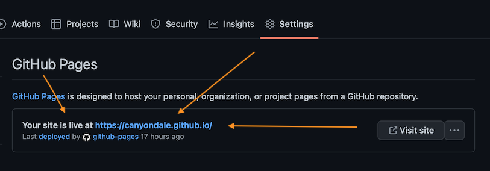

Before interfacing with GitHub, it's helpful to do the following:
1) Consolidate images for your webpage into a designated folder or directory
2) Write your code using a code editor (ex: VS Code)
3) Make sure images and the index.html file are in the same location
Here's an example from a tutorial video using VS Code:
REMEBER: if the images and index.html file aren't stored in the same location, that dog won't hunt.
Now let's DO THIS:
On the next page...
Scroll down all the way to the bottom and...
Keep going!
This screen will pop up. You know what to do.
ALMOST DONE!!!
Congratulations! You should now be able to access your webpage via the repository address you created in step 3. Enjoy your new webpage with pets and loved ones!
